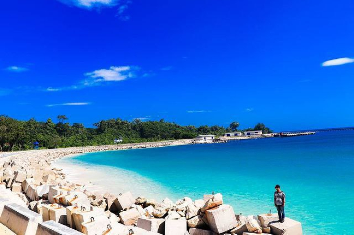
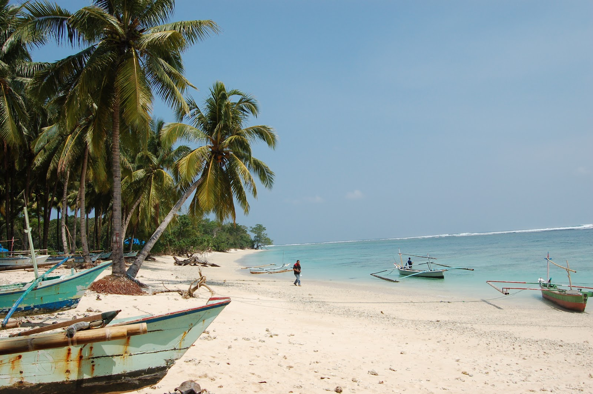
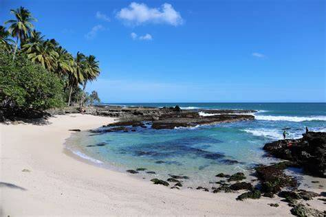
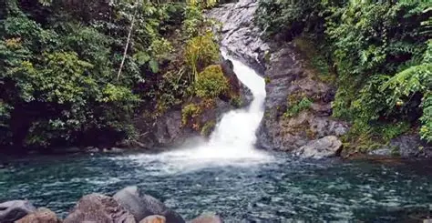

Kabupaten Kaur, Bengkulu
Pantai Laguna
Samudra
Pasir putih yang halus dan air laut yang jernih di kawasan Desa Wisata Pantai Laguna.
lihat selengkapnya
Pantai pertama yang dijumpai pengunjung dari arah Kota Bengkulu, dengan pasir putih dan air laut biru jernih.
Selengkapnya
Pasir putih yang halus dan air laut jernih di kawasan Desa Wisata Pantai Laguna.
Selengkapnya
Dijuluki “Bali-nya Kabupaten Kaur” dengan pasir putih, laut biru, dan batu karang.
Selengkapnya
Pantai tersembunyi dengan ombak khas, hamparan pasir luas, dan senja di tepi Samudra Hindia.
Selengkapnya
Air jernih dan pepohonan asri, pilihan wisata alam pegunungan selain pantai.
SelengkapnyaKaur menyimpan pantai bahari dengan pasir putih dan air laut yang jernih, serta air terjun dengan suasana pegunungan yang asri.
Pilih tempat untuk bersantai bersama keluarga, bermain air, menikmati senja, atau sekadar berfoto.
Pantai Linau adalah pantai pertama yang dijumpai pengunjung dari arah Kota Bengkulu, sedangkan Pantai Pengubaian dijuluki “Bali-nya Kabupaten Kaur”.
Menjelang sore, Pantai Air Langkap menjadi salah satu spot terbaik menikmati matahari terbenam di tepi Samudra Hindia. Untuk suasana pegunungan, kunjungi Air Terjun Batu Rigis.